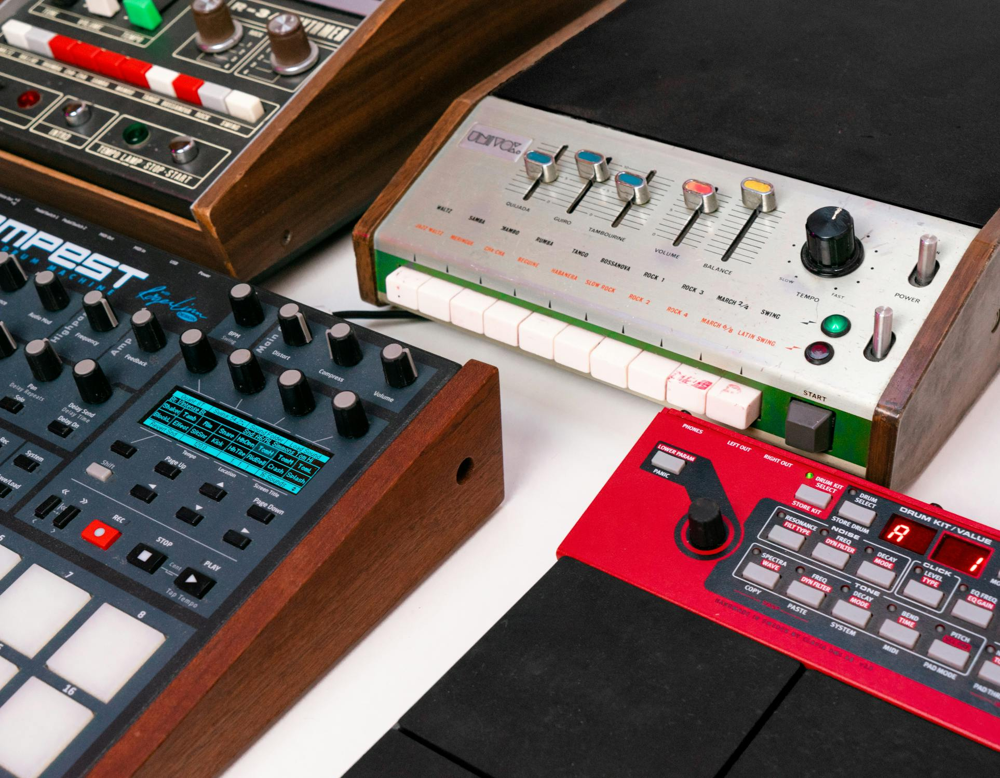
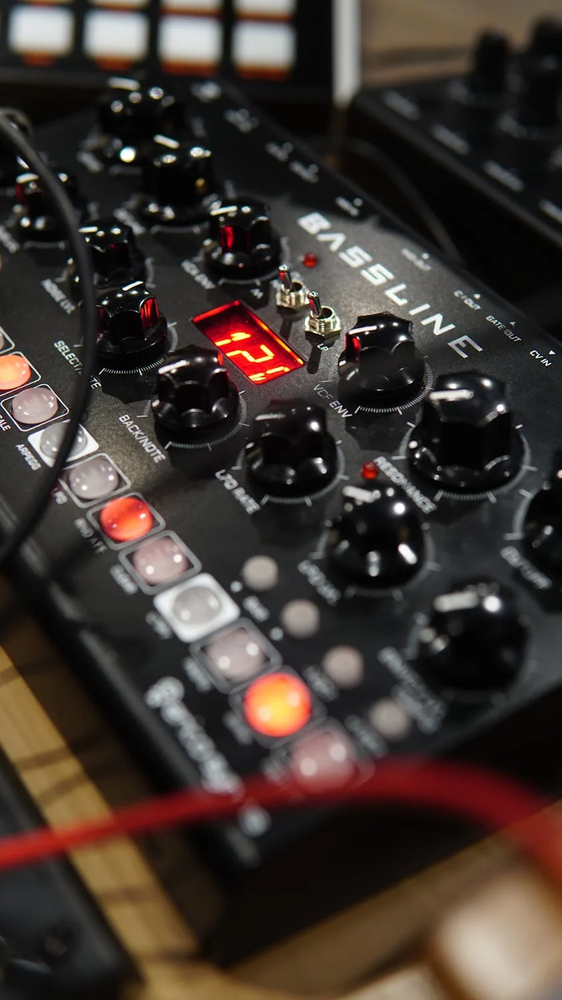

How do I operate the knobs on an effector?
The way to operate the knobs on an effector is very simple, just turn them with your fingers. Turning the knob clockwise increases the value of the effect, while turning it counterclockwise decreases the value. For example, turning a volume knob clockwise increases the volume, and turning it counterclockwise decreases the volume. In this way, you can change the sound. It's good to turn the knobs while listening to the changes in sound. When you connect it to an instrument and play, or apply effects to music from a computer or smartphone, you can create interesting effects by turning the knobs slowly or quickly.
How does turning the knobs change the sound?
By turning the knob, you can finely adjust the sound changes according to its function. For example, with FEEDBACK, turning the knob changes the number of repetitions of the sound. Turning it clockwise increases the repetitions, while turning it counterclockwise decreases them. This can create echo-like effects. Other effectors can change the volume, the amount of distortion, or the brightness or darkness of the sound. At first, the sound changes immediately with just a small turn, so you might have to adjust it repeatedly to find the sound you're looking for. However, as you get used to operating the effector, you will gradually become able to to master it and enjoy creating sounds. Getting to that point is a truly enjoyable journey!